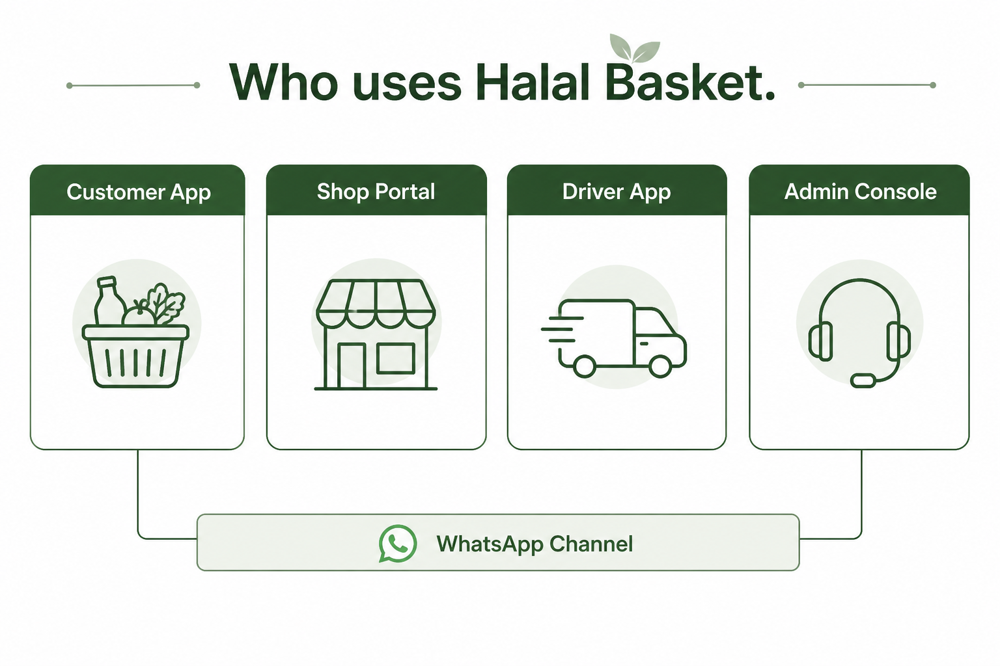
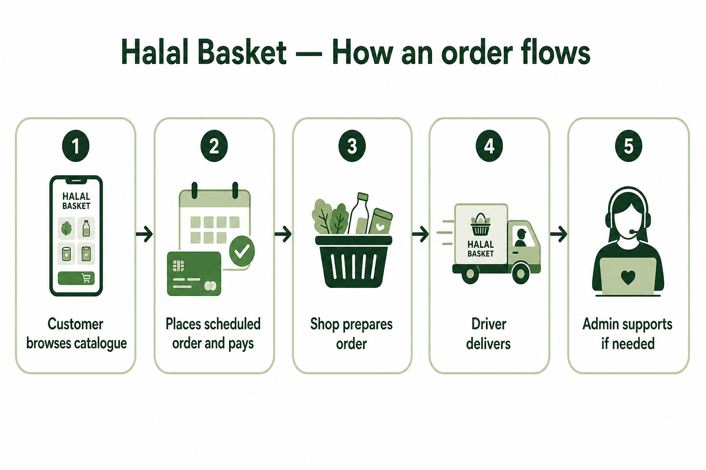
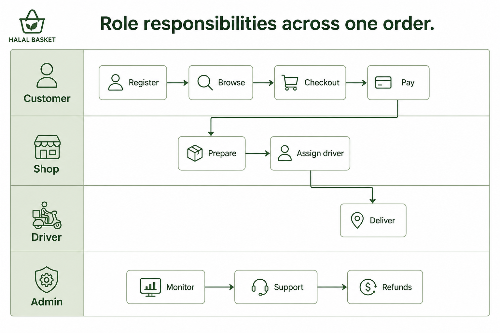

Halal Basket
A clear picture of how the platform works today — who uses it, how an order moves, and what every term means.
Halal Basket is a grocery ordering and delivery platform. Customers shop one branded catalogue. Partner shops prepare the goods. Drivers deliver. Operations staff support orders, catalogue, and customer care — including WhatsApp when enabled.

Four apps work together. WhatsApp is a messaging channel, not a separate login role.
Customer App — browse, order, pay, track
Shop Portal — prepare, stock, assign driver
Driver App — deliver assigned orders
Admin Console — support, settings, WhatsApp inbox

Happy path from customer browse through to delivery and optional admin support.

One order is a relay across Customer → Shop → Driver, with Admin on support.
Optional side path: WhatsApp opt-in for updates, or WhatsApp catalogue cart creating the same order plus a pay link.
Every important term used in this overview, in one place.
| Term | Meaning in Halal Basket |
|---|---|
| Halal Basket | The platform brand customers see. One catalogue experience, not separate shop storefronts. |
| Customer App | Where shoppers browse, add items, check out, pay, and track orders. |
| Shop Portal | Where a partner shop prepares orders, updates stock/prices, and assigns drivers. |
| Driver App | Where drivers see assigned deliveries and mark progress through to delivered. |
| Admin Console | Where operations and platform teams manage orders, users, catalogue, fees, legal, and WhatsApp. |
| Catalogue | The shared product listing customers browse. Availability depends on the selected delivery area. |
| Basket / Cart | The list of items the customer intends to buy, before the order is placed. |
| Delivery area | A named place we deliver to (for example Lucan, Swords, Tallaght). Affects stock and delivery day. |
| Delivery calendar | Rules that map each delivery area to the weekday(s) when deliveries run. |
| Scheduled delivery | The live checkout option today: customer orders ahead for a planned delivery day. |
| Order | The customer’s purchase record (items, totals, payment, delivery details). |
| Fulfillment | The shop’s part of an order — prepare, ready, out for delivery, delivered. |
| Stock hold | A short reservation of stock while checkout completes, so items are not double-sold. |
| Payment | Customer pays after placing the order (mock pay in pilot, or Stripe Checkout when configured). |
| Coupon / Promo | Discount codes or cart promotions applied at checkout (for example HALAL10, WELCOME5). |
| Partner shop | A store that stocks and prepares items for Halal Basket orders. |
| Warehouse | A central stock location type in the system; not published for customer fulfillment in the current pilot. |
| WhatsApp channel | Optional messaging path: order updates, customer care inbox, and catalogue cart → Halal Basket order. |
| Care inbox | Admin view of WhatsApp conversations so support can reply and help customers. |
| Assist link | A secure short-lived link that helps a customer continue checkout with support guidance. |
| Opt-in | Customer agrees to receive WhatsApp order updates and share a phone number. |
| RBAC / Permissions | Staff access controls — who can see ops, catalogue, GDPR, WhatsApp, and so on. |
| Platform vs Work | Admin navigation: Platform = settings/governance; Work = day-to-day operations. |
| GDPR tools | Admin privacy tools to search, export, or erase customer data under policy constraints. |
| Legal documents | Published policies (privacy, terms, cookies, refunds) shown to customers. |
| Favourites | Products a signed-in customer has hearted for quick re-find. |
| Live order status | Customer order tracking updates while the order moves through shop and driver steps. |